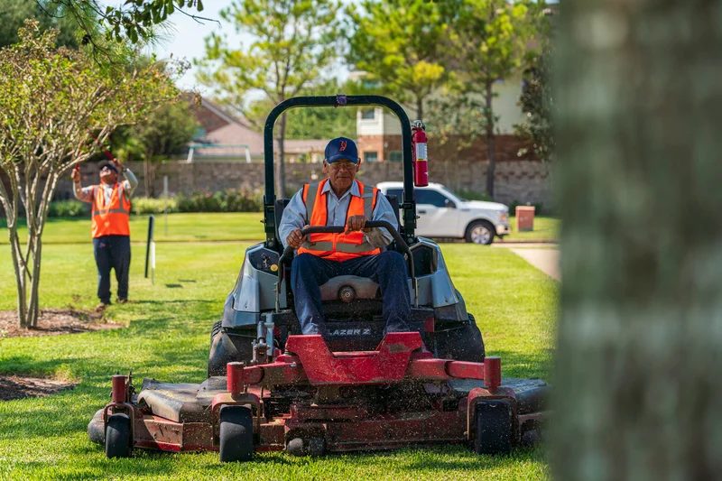

Top Cut Landscaping & Lawn Care LLC.
Servicing The Greater Chattanooga Area Since 2020

Half A Decade Of Experience
At Top Cut we have accumulated years worth of experience in both residential and commercial landcaping and lawn maintenance. Our crew is properly educated on the correct way to complete all of the listed services this company has to offer! From small projects to big projects we handle them all with the same professionalism and determination that this company was founded upon.
Our Start
Our company began its journey in the small business world nearly five years ago. Over the course of that time we have mastered our craft and perfected our skills as well as expanded into new services. Originally, TopCut was strictly cutting grass. What began as lawn maintenance quickly expanded to much more as many of our clients began to inquire about more services from us. Our company has vastly improved our skills in; customer service, response time, work ethic, team building, landscape desgin knowledge, and estimations since day one. Today, we have goals to go even further.